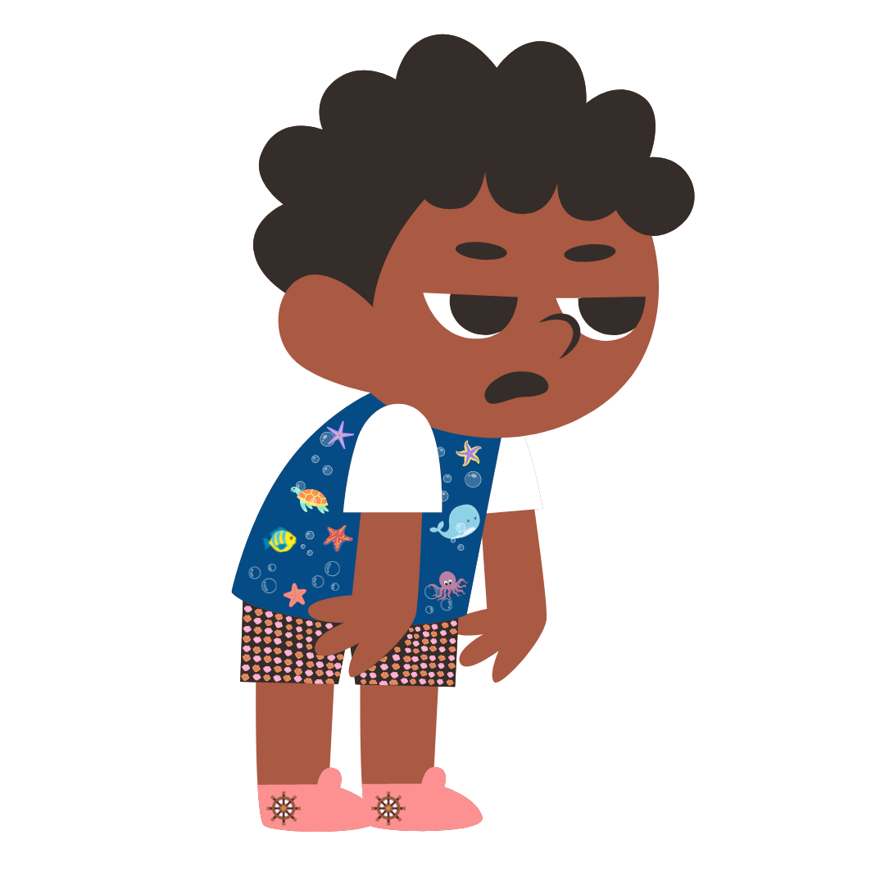
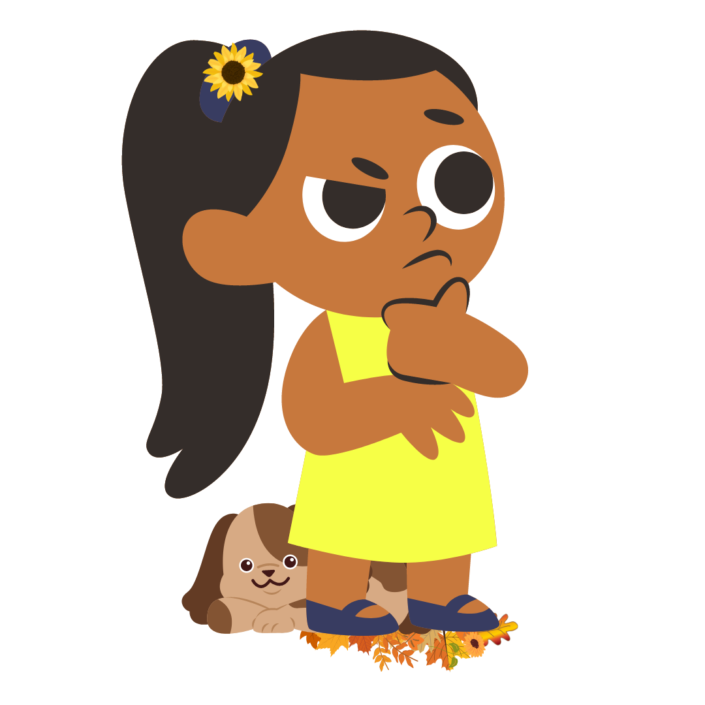

Marinho é super descolado com seu short de conchas brilhantes, ama banhar no rio ou na bacia da sua vovó Maria. Ele sempre vive irritado com a poluição no mar e quando crescer quer virar biólogo marinho, seu animal favorito são cavalos marinhos.
Maribel com seu rabicó de girassol, todo dia antes do almoço pega escondido um biscoito mabel, em companhia do seu cachorro Chico se aventuram descobrindo mais desse mundão, sua maior paixão é as flores, sempre sonhando com sua floricultura.
